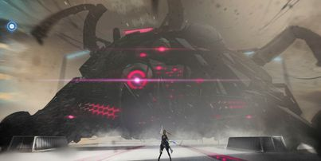

聚變技術使人類進入了高度聯合且飛速發展的黃金時代。但由於人類對基礎科學的究極探索終於觸碰到禁忌領域，象徵着「懲罰（punishing）」的「帕彌什」的病毒突然爆發。 人類脆弱的肉體被病毒迅速破壞，而被感染的機械則被病毒操控，化身為狂暴的屠戮機器。 在經歷了不到一個世紀的反抗之後，曾經高度繁榮的人類文明在地球上幾乎失去了痕跡。倖存者流亡深空，作為替代的是無數在大地上游蕩着的機械感染體。
能夠同時感染機械與人類的病毒，其導致了地球的淪陷，迫使大部分人類不得不移居至空中花園。 「最初，帕彌什病毒以極高的密度從人類第一座零點能反應堆的真空腔體中現身。 在其不斷進行質量展開的過程中，引發了泄露爆炸，使其隨大氣環流最終蔓延至全球。 帕彌什病毒能夠直接破壞生物體細胞，或通過操控邏輯電路使機械體呈現被感染狀態。 並對任何具有人類意識行為的個體，展現出極其強烈的攻擊欲望。」
對半機械半生物體的總稱，其由人類個體改造而來。空中花園在地球執行軍事行動的主力單位。 構造體技術，是由一部分與鉭-193共聚物相性良好的人類適格者，基於人體改造而成的機械與生物完美結合的仿生技術。 構造體技術是人類史上一個里程碑式的進步。人類終於可以做到將意識通過扭曲的形式來剝離，存儲到機械載體中——這意味著「永生」不再是不可觸及的幻夢。 但是，改造實驗的成功需要實驗體對鉭-193共聚物相性良好，且一旦失敗便會丟掉性命。 以黑野氏集團最新銳的技術製作出來的對帕彌什殲滅兵器，通過佩戴「逆元形態裝置」可以讓機體主腦不受病毒影響。 構造體的力量來源於意識而非單純的武力，通過名為「意識海」的專用網絡為每個執行者構建獨立的仿人類意識來行動。 「構造體是仿生學的尖端產物，同時也是人類對抗 「帕彌什」病毒的希望。 使用特殊材料重構人類軀體，並通過意識海系統對人類思維基底進行完全重現，從原理上降低 「帕彌什」病毒對構造體意識的侵擾，使構造體能夠在 「帕彌什」病毒環境下堅持與感染體對抗。 但在其技術尚未成熟之時，曾有過一段不為人知的殘酷時期。」
對被帕彌什病毒完全感染的個體的總稱。 「感染體的類型包括但不限於電子設備設施，機械體，構造體…… 各感染體會根據其自身特性表現出諸如改造，增殖，破壞等不同行為， 但最終目的都是為了更高效地消滅所有人類意識個體， 且自身體內的帕彌什病毒濃度越高，攻擊欲望就越強烈，破壞力也會越強。」
人類在地球的敵對勢力之一，極具威脅性。 升格者與人類一方的構造體理念相反，它們選擇接納帕彌什病毒，並利用帕彌什的力量達成自己的目的。 帕彌什病毒可以大幅提升升格者的實力，甚至其作用遠不止於此…… 「升格者相互之間通過「升格網絡」共享著一種十分特殊的能力—— 允許它們在接受帕彌什病毒深度感染的同時，仍然維持自我意識，並獲得強大的力量。 成員們結成組織的起因不詳，但能確定的是，它們正把帕彌什病毒作為工具，向人類乃至全世界「傳播」著它們的理念。」
| 黑星墜落 | |
|---|---|
| 永久列車 |  |
| 九龍夜航 | |
| 九龍環城 | |
| 湛藍曙日 | |
| 重返極夜 | |
| 古銘遺章 | |
| 終焉福音 | |
| 詠嘆回聲 | |
| 視線囚籠 | |
| 迷境刻痕 | |
| 絕海星火 | |
| 永夜胎動 | |
| 湮滅殘晝 | |
| 宣敘妄響 | |
| 遊雲鯨夢 | |
| 曙星致意 | |
| 遙岸方舟 | |
| 空曉界限 | |
| 枯朽為燈 |